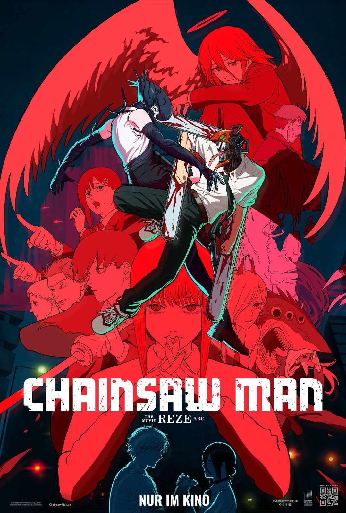

 Chainsaw Man: O Filme - Arco da Reze
Chainsaw Man: O Filme - Arco da Reze Duração: 1h 40m
Duração: 1h 40m Classificação Indicativa: 18
Classificação Indicativa: 18Denji finalmente vive como o temido Homem-Motosserra, um jovem com coração de demônio que integra a Divisão Especial 4 de Caçadores de Demônios. Depois de um encontro marcante com Makima, a mulher de seus sonhos, ele busca refúgio da chuva e acaba conhecendo Reze, a misteriosa atendente de um café.